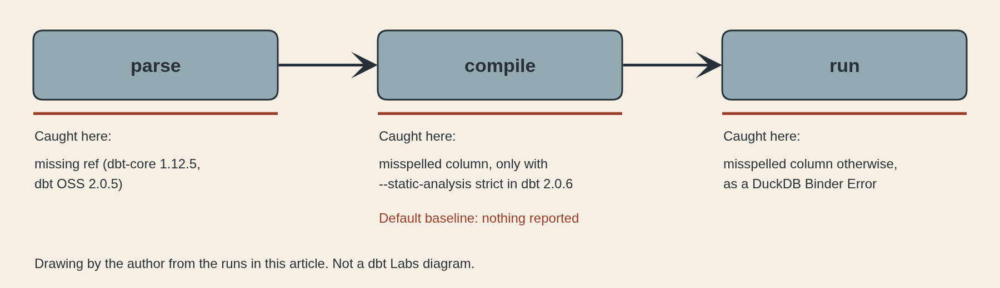
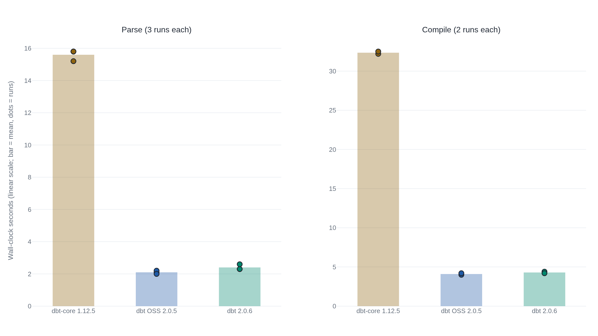

dbt v2 checks column names before the warehouse, in strict mode and only in the proprietary build
On a two-model DuckDB project, dbt 2.0.6 flagged a misspelled column at models/b.sql:1:12 under --static-analysis strict, and dbt OSS 2.0.5 said it does not include the check.
A misspelled column compiles cleanly in dbt v2
In dbt, each SQL file is a model that becomes a table or view in the warehouse, and ref('a') makes one model read from another. dbt compile renders the SQL and sends nothing to the warehouse. dbt run sends it. This article assumes you can read SQL and defines the rest of dbt's vocabulary as it comes up.
The test project has two models on DuckDB. Model a is select 1 as id, 'x' as name. Model b is select id, nme from {{ ref('a') }}, which misspells name as nme. I installed dbt 2.0.6 with pip install dbt1, pointed a type: duckdb profile at a local file2, and ran three commands with no dbt login and no warehouse account.
$ dbt --version
dbt 2.0.6
$ dbt compile
Finished 'compile' successfully for target 'dev' [603ms]
Summary: 2 total | 2 success
$ dbt compile --static-analysis strict
Failed model main.b (view)
[error] [UnresolvedIdentifier (dbt0227)]: No column nme found. Available are toy.main.a.name, toy.main.a.id
--> models/b.sql:1:12 (target/compiled/toy/models/b.sql:1:12)
Finished 'compile' with 1 error for target 'dev' [390ms]
Summary: 2 total | 1 success | 1 error
$ dbt run
Succeeded model main.a (view)
Failed model main.b (view)
[error] [DbDriverFailed (dbt1308)]: Database Error in model b (target/run/toy/models/b.sql)
Binder Error: Referenced column "nme" not found in FROM clause!
Candidate bindings: "name"
Finished 'run' with 1 error for target 'dev' [1.5s]
Summary: 2 total | 1 success | 1 errorDefault compile reports both models as successes and prints nothing about nme. With --static-analysis strict, the same compile fails on b and points to line 1, column 12 of models/b.sql, which is where nme starts, and lists the two columns that model a has. dbt run without the flag builds a, then fails on b inside DuckDB, whose error names name as the candidate.
A missing ref already failed before the run in v1
The same project on dbt-core 1.12.5 with dbt-duckdb 1.11.0, the last Python line I tested, behaves like v2 without the flag.
# dbt-core 1.12.5 with dbt-duckdb 1.11.0
$ dbt compile
(passes)
$ dbt run
1 of 2 OK created sql view model main.a
2 of 2 ERROR creating sql view model main.b
Runtime Error in model b (models/b.sql)
Binder Error: Referenced column "nme" not found in FROM clause!
Candidate bindings: "name"
Done. PASS=1 WARN=0 ERROR=1 SKIP=0 NO-OP=0 REUSED=0 TOTAL=2Compile passes and the database rejects the typo. dbt Labs' GA post says why in general terms: in v1, dbt did not understand the SQL it generated.3 I believe that explains the compile pass, since a template renderer has no schema to check nme against. I did not read v1's source to confirm it.
A bad reference is a different case. I replaced model b with select id from {{ ref('missing_model') }} and compiled it on dbt-core 1.12.5 and on dbt OSS 2.0.5. dbt-core 1.12.5 failed with a Compilation Error saying b depends on a node named missing_model that was not found. dbt OSS 2.0.5 failed with [DependencyNotFound (dbt1048)], naming the same missing ref. A ref names a model, and dbt resolves it against the project's model graph without understanding any SQL, so this pre-run failure was already there in v1. The pre-warehouse catch that v2 adds4 is the misspelled column, not the ref.
The upgrade guide lists a separate parse-time change, which is that v2 enforces a language specification and raises errors for misspelled configs and unexpected YAML keys that v1 ignored.5 In a separate run, dbt OSS 2.0.5 rejected a misspelled desciptin key in a model's YAML. I did not establish what v1 prints for it.
Strict mode resolves each column against the upstream model's schema
dbt Labs describes the mechanism as a local SQL compiler that builds a logical plan, validates sources, functions and seeds, and detects invalid column references, function signatures and argument types before anything reaches the warehouse.3 The dbt0227 message shows what that requires. To report that nme is missing, dbt has to know that model a outputs name and id, and it can only know that by analyzing a's SQL. A template renderer cannot do that. It takes a SQL parser, which dbt Labs says v1 lacked.3

Three modes exist. strict, which was previously called on, analyzes all SQL before execution begins. baseline is the default for existing projects. off disables analysis.6 The upgrade guide says baseline parses SQL at compile time and reports findings as warnings, and that strict fully resolves column types.5 The config reference calls baseline a starting point that still catches most SQL errors, and does not list which ones.6 In my run baseline caught nothing for a plain misspelled column, with the default and with --static-analysis baseline given explicitly.
A migration report points the same way. A practitioner's merged pull request in dbt Labs' agent-skills repository sets its reproduction command to strict because plain dbt compile misses errors strict mode catches. It calls case-sensitive column mismatches, reported as dbt0227 or dbt0209, the most common strict-mode pattern in one real migration. It also says static analysis reports only the first error per node.7
The upgrade guide says strict requires dbt login.5 The feature matrix lists semantic error detection as needing no login.8 On DuckDB, strict ran for me with no login.
dbt OSS prints a warning and compiles anyway
At the 16 September 2026 GA, dbt Labs renamed its builds. The default, dbt, is the former Fusion engine. dbt OSS, the former dbt Core v2, is the Apache 2.0 subset.9 I installed it with pip install dbt-oss.10
$ dbt --version
dbt-oss 2.0.5
$ dbt compile --static-analysis strict
[warning] [Generic (dbt1000)]: static analysis was requested with `--static-analysis strict` but did not run: this distribution of dbt OSS does not include the static analysis engine. Install the full dbt distribution to enable it: dbt system upgrade-distribution
Finished 'compile' with 1 warning for target 'dev' [259ms]
Summary: 2 total | 2 successdbt run failed in DuckDB with the same Binder Error as in the first listing.The flag is accepted and the check does not run. The result is a warning, and compile reports two successes. dbt Labs' documents say the same thing in three places. The dbt OSS install page lists SQL comprehension and static analysis as not included.10 The comparison table marks advanced local features, including SQL comprehension, as present in dbt and absent from dbt OSS.9 The June roadmap placed advanced SQL comprehension, linting and column-level lineage in the Fusion-only group.11
The repository README says its main branch holds the Apache 2.0 source of dbt v2, a ground-up Rust rewrite, and that dbt is a distribution of that repository with customizations released under a dbt product license.12 That license is proprietary.13 It costs nothing and needs no login to use, and dbt Labs recommends it over dbt OSS.9 The Fivetran and dbt Labs press release says both versions remain Apache 2.0-licensed.14 The documentation says only dbt OSS is. Datacoves, which sells managed dbt, describes the change as moving the split from the codebase to the license.15 I follow the documentation, because it is the document that owns the distinction.
The two builds share the Rust code base underneath. Both parsed my 3,000-model test project in about two seconds (2.1 s for dbt OSS, 2.4 s for dbt). dbt OSS has the shared parser and not the column check.
Speed figures come from three owners
dbt Labs' GA post reports a 10,000-node benchmark project compiling in 70 seconds on dbt 1.12.0 and 17 seconds on dbt v2, about 4x, and says normal-sized projects see 2x or more.3 The joint press release says dbt v2 parses a 10,000-model project up to 10x faster than v1 and gives no method.14 The two measure different steps, and no document I read reconciles them. I found no independent reproduction of either. My own run used a synthetic project of 3,000 models, each a one-line join of two earlier models, on a 4-core Linux machine at default settings. Parse took about 15.6 seconds on dbt-core 1.12.5, 2.1 on dbt OSS 2.0.5 and 2.4 on dbt 2.0.6. Compile took 32.2 and 32.5 seconds on v1 against about 4 on both v2 builds. That is a different workload from dbt Labs' project and no strict analysis was on, so it neither confirms nor refutes their figures.

One adapter, one project and one patch version
The check was run on DuckDB only. dbt Labs' own pages disagree on that adapter's status. The feature matrix lists DuckDB (CLI only) with the GA adapters,8 and the upgrade guide lists it under beta.5 The DuckDB setup page says some dbt-duckdb v1 features are not yet supported.2 I did not test BigQuery, Databricks, Redshift or Snowflake, the adapters the upgrade guide lists as GA.5
Strict mode has the limits dbt Labs documents. A child model cannot be stricter than its parent, custom materializations are set to off and make everything downstream ineligible, and analysis can fail on dynamic SQL or unrecognized UDFs.6 The migration report adds that results differed between an isolated --select compile and a full-project compile of unchanged code, and that its authors check suspect findings against warehouse queries.7
Independent evidence that people run v2 is thin. I found one production migration, relayed through a pull request in a dbt Labs repository,7 and a summit attendee who repeats the 10x claim.4 GitHub's API refused my reads of the repository, so I have no download, star or issue figures. Everything above was observed on dbt 2.0.6 and dbt OSS 2.0.5 and may change in later patches.
The model in my example gets its columns from another model, so dbt could analyze it fully. The DuckDB setup page says static analysis may not infer schemas for models that read local files with read_csv(), read_parquet() or read_json(), and that dbt may report type-resolution warnings or compile errors for queries that work at run time.2 I did not run that case.
Sources
- dbt Labs · Install dbt
- dbt Labs · Connect DuckDB to dbt v2
- dbt Labs · dbt v2 is GA
- Brains & Bots · dbt Summit 2026 wrap-up (Sonny Rivera)
- dbt Labs · Upgrading to dbt v2
- dbt Labs · static_analysis config reference
- dbt-labs/dbt-agent-skills · PR 164, lessons from a production migration to v2
- dbt Labs · dbt v2 supported features
- dbt Labs · Comparing dbt and dbt OSS
- dbt Labs · Install dbt OSS
- dbt Labs · Announcing dbt v2 (roadmap, June 2026)
- dbt-labs/dbt · README
- dbt Labs · dbt Product License Agreement
- Fivetran and dbt Labs · press release, dbt Summit 2026
- Datacoves · dbt Fusion (Noel Gomez, 22 July 2026)